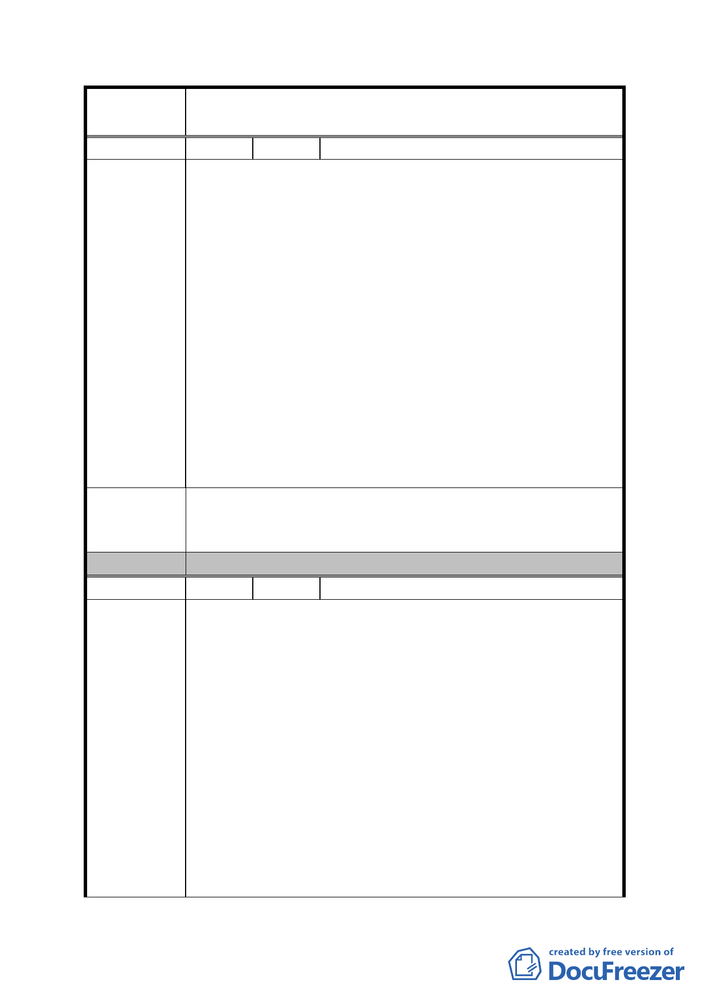

案
名
修訂臺北市「基隆河（中山橋至成美橋段）附近地區土地使
用分區與都市設計管制要點」（北段地區）計畫案
編 號 39 陳情人 呂吉弘等 8 人
一、本計畫地區採區段徵收於民國86年領回受分配土地，於
民國92年公告實施都市計畫，歷時5年後於97年1月30
日市府發佈二次通盤檢討（下稱二通）公展版，然迄今
99年8月二通始終未果。
二、本地區地主於區段徵收領回土地時，商業用地領回較住
宅區領回比例少二倍，且政府為誘使地主同意徵收，利
陳情理由
誘地主說商業區可以蓋較多，所以我們才同意分配商業
區。
三、本區緊鄰內湖科學園區，該地區已經十餘次通盤檢討使
用。然本地區因其地價高於內科二倍以上，故致本地區
可供興建住宅使用地區蓋滿後，導致其他使用分區接踵
變相住宅使用。
四、本區居民認為有重新檢討使用之必要，請里長邀請相關
人員跟我們說明，不要自己開會決定。
陳請續為「基隆河（中山橋至成美橋段）附近地區土地使用
建 議 辦 法 分區與都市設計管制要點」（北段地區）計畫案二次通盤檢
討重新公開展覽吸取當地民眾意見。
委 員 會 決 議 同編號 1。
編 號 40 陳情人 王貴雲（99.9.16）
一、有關「修訂臺北市『基隆河（中山橋至成美橋段）附近
地區土地使用分區與都市設計管制要點』（北段地區）
計畫案」之使用部分，特別針對台北市商辦及住宅市場
作詳細分析呈供委員參考。
二、依附件「台北市商辦及住宅市場分析報告」之第8頁，
陳情理由
目前台北市商業辦公大樓空置比率約16％，預計2012
年空置率會升到20％，顯示台北市目前已發生商辦大樓
供給量大於實際需求。
三、依「台北市商辦及住宅市場分析報告」中第 47 頁，台
北市住宅是處於供不應求之狀況，台北市住宅供給量為
89.79 萬戶，但設籍台北市家戶數有 97.22 萬戶，等於
有 7.43 萬戶（8％）有購屋需求。
四、基於上述原因懇切建議本計畫區請依 98 年 9 月 10 日都
- 100 -